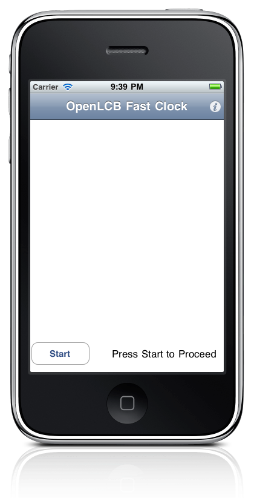
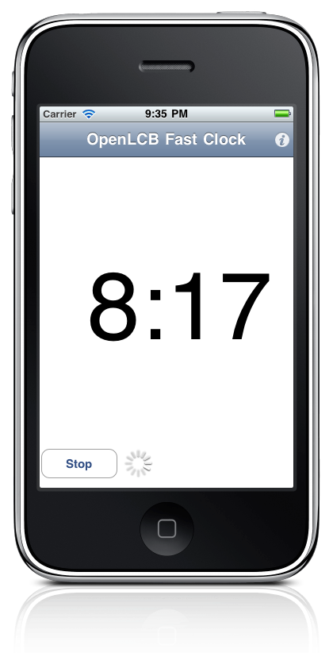
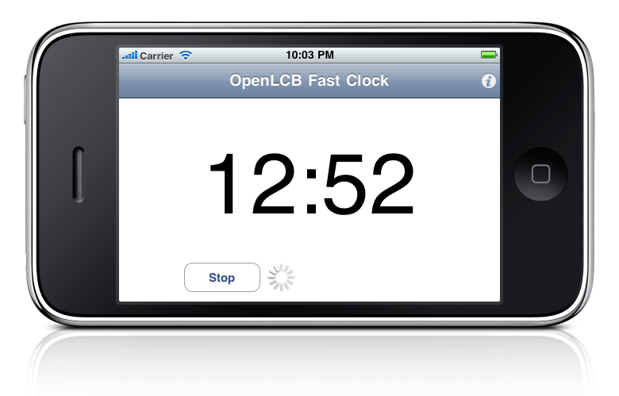

The OpenLCB FastClock app for iPhone® connects via the Internet to your CAN-based OpenLCB, and then displays a synchronized fast clock.
Version 0.2 of the app displays the time in portrait or landscape orientation. We're working on the next version, which will also control the clock so you can set the time, change the rate, etc.
  
To get the most recent version for building your own local copy with XCode:
svn co http://svn.code.sf.net/p/openlcb/svn/trunk/prototypes/
To get the 0.2 version (most recent in the app store):
svn co http://svn.code.sf.net/p/openlcb/svn/tags/0.0.2.1/prototypes/
This web sites contains trademarks and copyrighted information. Please see the Licensing page.
This is SVN $Revision$ of